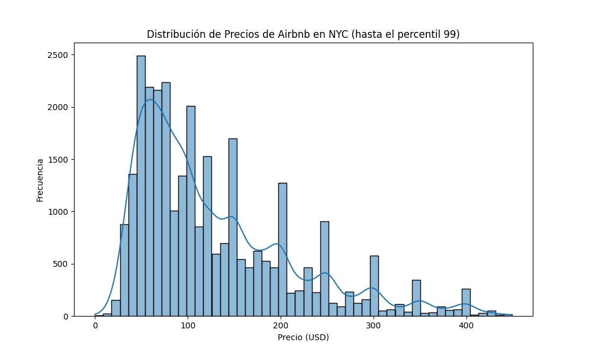
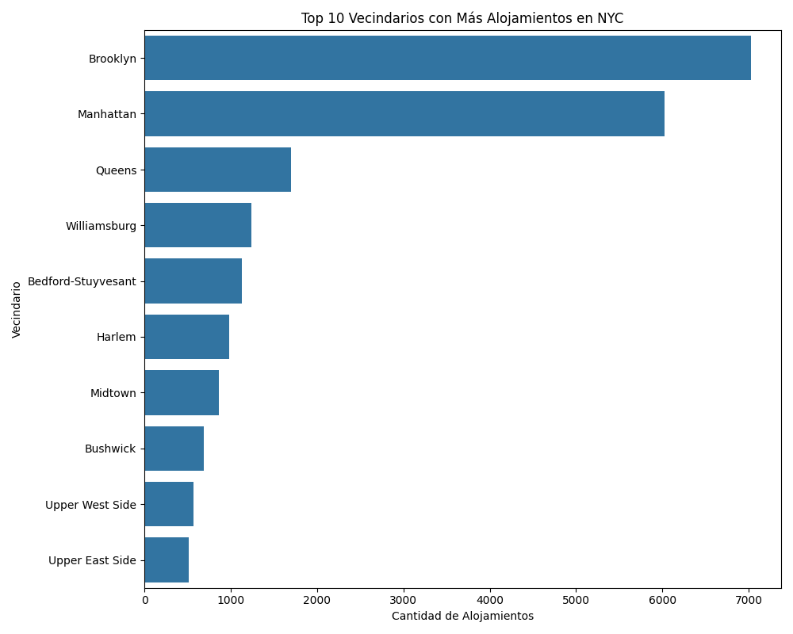
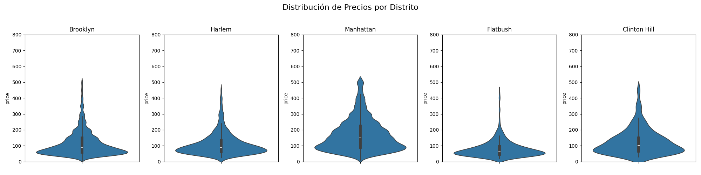
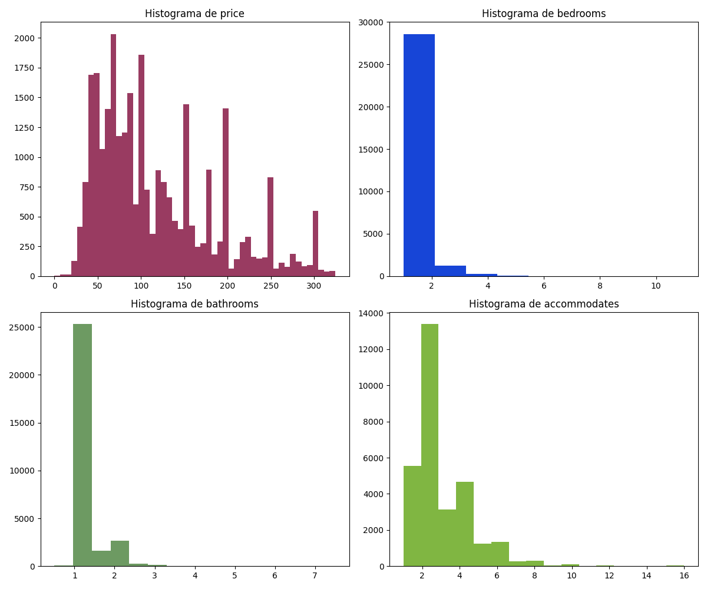
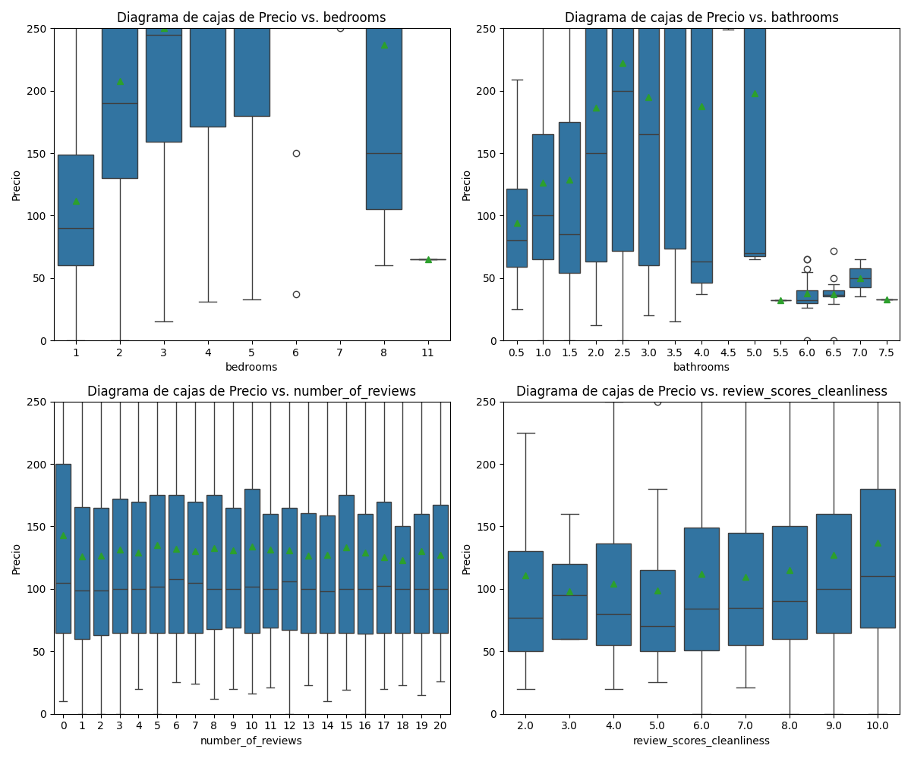
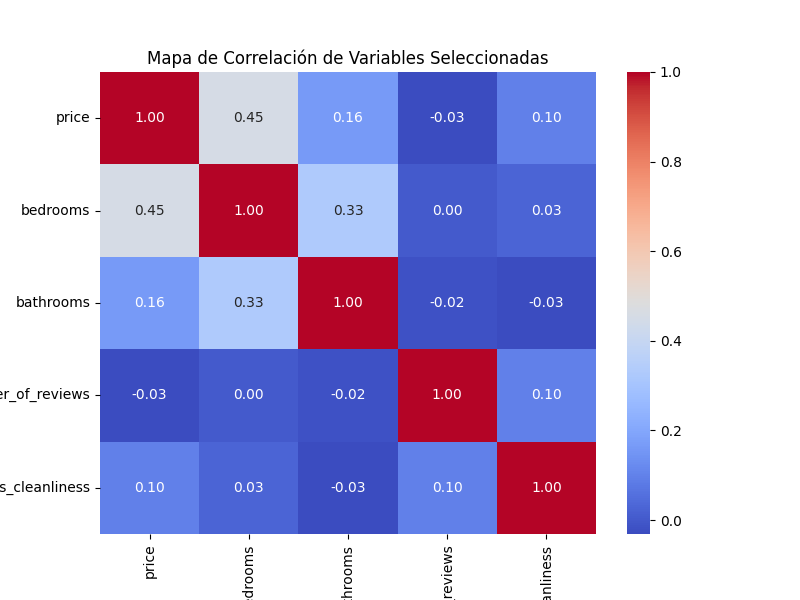

1. Introducción
¡Bienvenido a esta guía práctica! El objetivo de hoy es aprender a utilizar las librerías fundamentales de Python para la ciencia de datos: Pandas y NumPy. Realizaremos un análisis exploratorio de datos (EDA) sobre un conjunto de datos real de alojamientos de Airbnb en la ciudad de Nueva York.
2. Cargando las Librerías
import pandas as pd
import numpy as np
import matplotlib.pyplot as plt
import seaborn as sns3. Cargando el Conjunto de Datos
df = pd.read_csv('airbnb_nyc.csv', delimiter=',')4. Primera Mirada a los Datos (Exploración Inicial)
Visualizar las primeras filas con .head()
print(df.head())
id name host_id host_name neighbourhood_group neighbourhood latitude longitude room_type price minimum_nights number_of_reviews last_review reviews_per_month calculated_host_listings_count availability_365
0 2539 Clean & quiet apt home by the park 2787 John Brooklyn Kensington 40.64749 -73.97237 Private room 149 1 9 2018-10-19 0.21 6 365
1 2595 Skylit Midtown Castle 2845 Jennifer Manhattan Midtown 40.75362 -73.98377 Entire home/apt 225 1 45 2019-05-21 0.38 2 355
2 3647 THE VILLAGE OF HARLEM....NEW YORK ! 4632 Elisabeth Manhattan Harlem 40.80902 -73.94190 Private room 150 3 0 NaN NaN 1 365
3 3831 Cozy Entire Floor of Brownstone 4869 LisaRoxanne Brooklyn Clinton Hill 40.68514 -73.95976 Entire home/apt 89 1 270 2019-07-05 4.64 1 194
4 5022 Entire Apt: Spacious Studio/Loft by central park 7192 Laura Manhattan East Harlem 40.79851 -73.94399 Entire home/apt 80 10 9 2018-11-19 0.10 1 0
5. Resúmenes y Agrupaciones
Precio promedio por grupo de vecindario
precio_promedio_por_distrito = df.groupby('neighbourhood_group')['price'].mean().round(2)
print(precio_promedio_por_distrito)neighbourhood_group Bronx 87.50 Brooklyn 124.38 Manhattan 196.88 Queens 99.52 Staten Island 114.81 Name: price, dtype: float64
6. Visualización y Análisis de Datos (Dataset Básico)
Análisis de la Distribución de Precios
plt.figure(figsize=(10, 6))
sns.histplot(df[df['price'] < df['price'].quantile(0.99)]['price'], bins=50, kde=True)
plt.title('Distribución de Precios de Airbnb en NYC (hasta el percentil 99)')
plt.xlabel('Precio (USD)')
plt.ylabel('Frecuencia')
plt.show()
Interpretación: El histograma nos muestra una distribución de precios con un claro sesgo a la derecha. Esto significa que la gran mayoría de los alojamientos se concentran en el rango de precios más bajos (entre $50 y $200), mientras que hay una cantidad mucho menor de propiedades con precios muy elevados.
Análisis de Alojamientos por Vecindario (Top 10)
top_10_neighbourhoods = df['neighbourhood'].value_counts().nlargest(10).index
plt.figure(figsize=(10, 8))
sns.countplot(y='neighbourhood', data=df[df['neighbourhood'].isin(top_10_neighbourhoods)], order=top_10_neighbourhoods)
plt.title('Top 10 Vecindarios con Más Alojamientos en NYC')
plt.xlabel('Cantidad de Alojamientos')
plt.ylabel('Vecindario')
plt.tight_layout()
plt.show()
Interpretación: Al enfocarnos en los 10 vecindarios con más ofertas, vemos que áreas como Williamsburg y Bedford-Stuyvesant en Brooklyn, y Harlem en Manhattan, son extremadamente populares. Esto nos da una vista más granular que el análisis por distrito y nos permite identificar los verdaderos "hotspots" de Airbnb en la ciudad.
Análisis de Precios por Vecindario (Primeros 5)
fig, axes = plt.subplots(1, 5, figsize=(20, 5))
fig.suptitle('Distribución de Precios por Vecindario (Muestra)', fontsize=16)
distritos = df['neighbourhood'].unique()[:5]
for i, group in enumerate(distritos):
sns.violinplot(y='price', data=df[df['neighbourhood'] == group], ax=axes[i])
axes[i].set_title(group)
axes[i].set_ylim(0, 800)
plt.tight_layout(rect=[0, 0.03, 1, 0.95])
plt.show()
Interpretación: Este análisis nos permite comparar directamente la distribución de precios entre vecindarios específicos. Por ejemplo, podemos ver que Midtown tiene una mediana de precios significativamente más alta y una mayor dispersión en comparación con Kensington o Clinton Hill, lo que refleja la alta demanda y el carácter céntrico de esa zona de Manhattan.
7. Análisis de Variables Específicas
Nota Importante: Los siguientes análisis requieren que el DataFrame df contenga columnas adicionales como bedrooms, bathrooms, y review_scores_cleanliness. Estas columnas estaban presentes en el conjunto de datos original del notebook y son necesarias para ejecutar estos fragmentos de código específicos.
Histogramas de Variables Clave
plt.figure(figsize=(12,10))
colores=['#993B61','#1745D7','#6D9A62','#80B642']
vars_a_dibujar = ['price', 'bedrooms','bathrooms','accommodates']
for i, var in enumerate(vars_a_dibujar):
plt.subplot(2,2,i+1)
if var == 'price':
plt.hist(df[df[var] < df[var].quantile(0.95)][var], 50, color=colores[i])
else:
plt.hist(df[var].dropna(), bins=max(1, df[var].nunique()), color=colores[i])
texto_de_titulo = "Histograma de " + var
plt.title(texto_de_titulo)
plt.tight_layout()
plt.show()
Interpretación: Estos histogramas nos ayudan a entender la distribución de características fundamentales de las propiedades. Por ejemplo, la mayoría de los listados son de 1 o 2 habitaciones y tienen 1 solo baño. La capacidad (accommodates) se centra principalmente en 2 a 4 personas.
Relación de Precio con Otras Variables
plt.figure(figsize=(12,10))
vars_a_dibujar =['bedrooms','bathrooms','number_of_reviews','review_scores_cleanliness']
for i, var in enumerate(vars_a_dibujar):
plt.subplot(2,2,i+1)
sns.boxplot(x = var, y='price', data = df, showmeans=True)
plt.ylim(0, df['price'].quantile(0.9))
texto_del_titulo = "Diagrama de cajas de Precio vs. " + var
plt.ylabel("Precio")
plt.title(texto_del_titulo)
plt.tight_layout()
plt.show()
Interpretación: Los diagramas de caja muestran una tendencia clara: a mayor número de habitaciones (bedrooms) y baños (bathrooms), el precio tiende a aumentar. Sin embargo, la relación con las variables de reseñas (number_of_reviews, review_scores_cleanliness) no es tan directa, sugiriendo que tener más reseñas o mejores calificaciones de limpieza no garantiza un precio más alto.
Análisis de Correlación Específico
correlation = df[['price','bedrooms','bathrooms','number_of_reviews','review_scores_cleanliness']].corr()
plt.figure(figsize=(8, 6))
sns.heatmap(correlation, annot=True, cmap='coolwarm', fmt=".2f")
plt.title('Mapa de Correlación de Variables Seleccionadas')
plt.show()
Interpretación: Este mapa de calor enfocado nos da una visión más limpia. Confirma que bedrooms y bathrooms tienen la correlación positiva más fuerte con price de este grupo. Aunque la correlación no es extremadamente alta (0.33 y 0.30), es la más significativa. Las variables de reseñas muestran una correlación casi nula o ligeramente negativa con el precio.